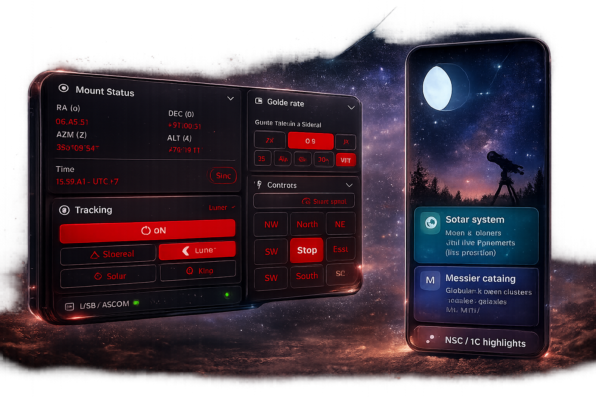
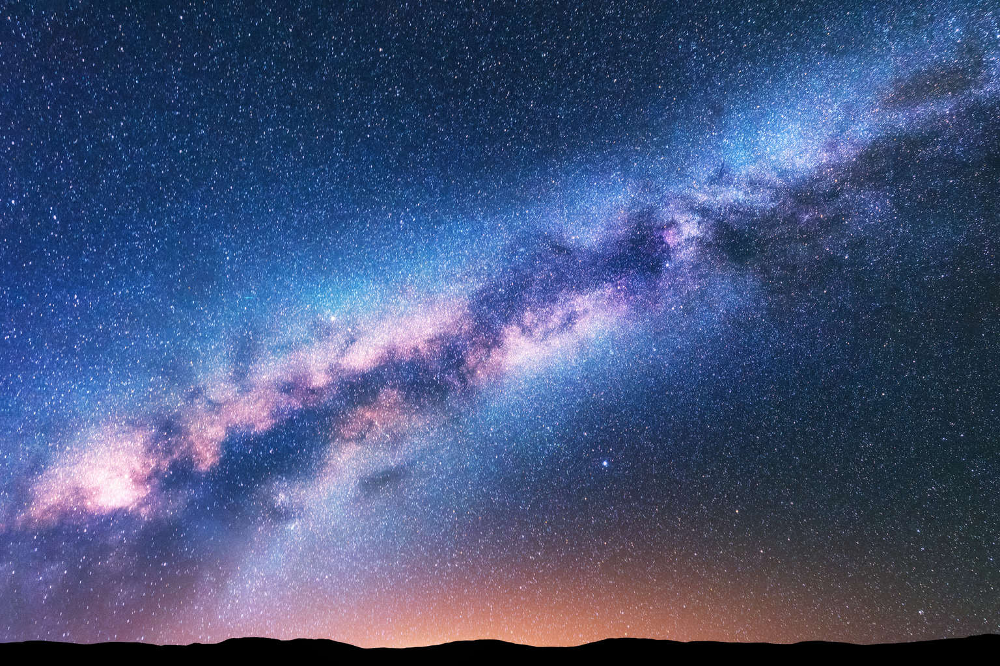
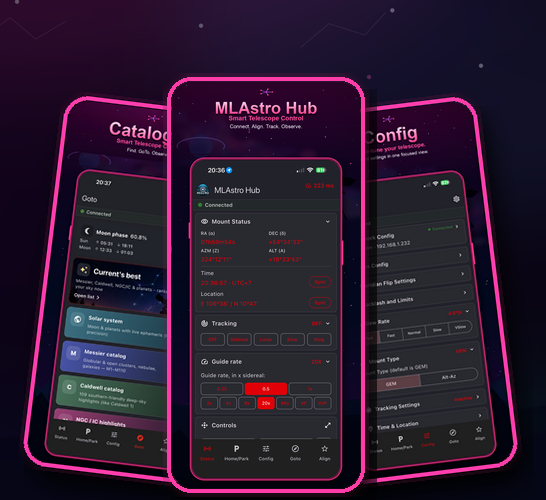

Control the Cosmos.
Professional telescope control, now at your fingertips. Align, track, and capture the deep sky with precision hardware integration and a stunning user interface.

Available Platforms
MLAstro Mobile
Full mobile control suite for field observations. Optimized for iOS and Android.
MLAstro Desktop
Control your telescope from your desktop with full functionality and seamless USB ASCOM integration.
Requires Windows 10/11 x64
Hardware Support
Essential drivers to connect your mount and cameras to the MLAstro ecosystem.

Designed for the Deep Sky
Engineered for the most demanding astrophotography workflows, providing laboratory-grade precision in a consumer-friendly package.
Plate Solving
Lightning fast celestial alignment using advanced algorithms.
Guiding Performance
Sub-pixel tracking accuracy for long exposure photography.
